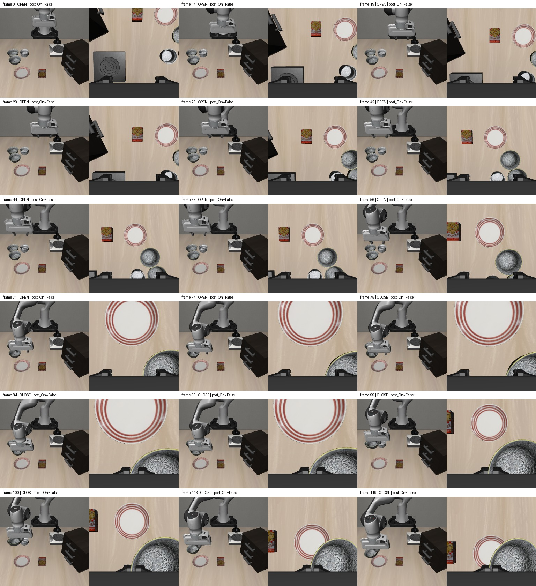
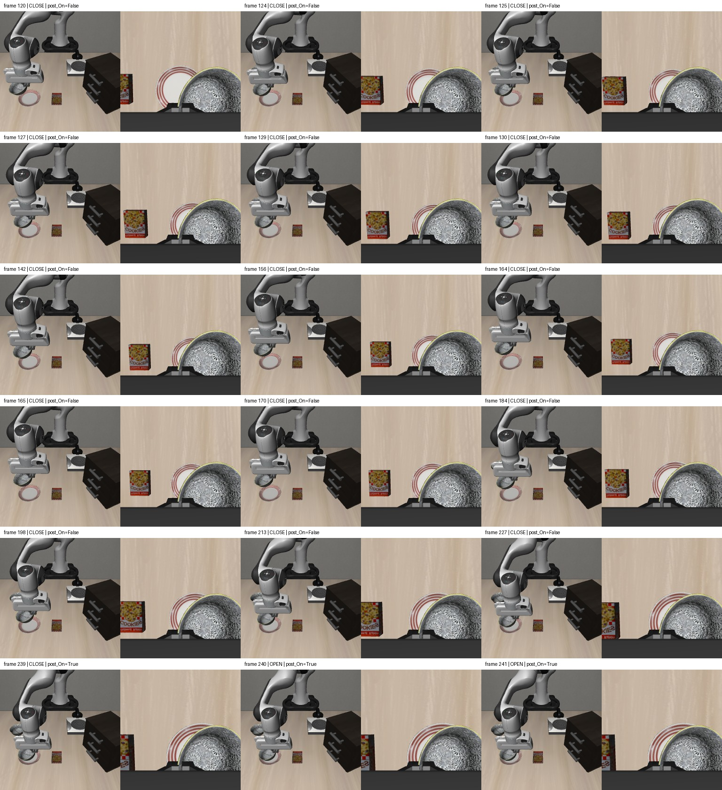
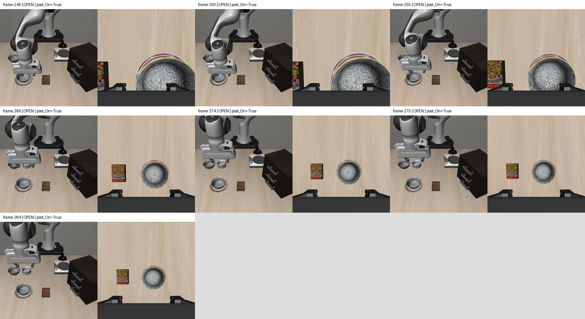

X偏移−7.64厘米，Y偏移−3.30厘米。一次闭爪抓起，普通挡0.6搬运；接近盘子后精细挡0.1调整、下降，随后松爪撤手。末10步检查全通过。保留为完整任务候选，原件不改，尚未加入训练。175步和65步草稿均排除。
人工示范回放，不是模型评测。20FPS对应物理20Hz，操作等待省略；每帧为动作前双视角RGB，post_On为动作后标签。已查看43个关键帧，没有物理重放或额外50步稳定性试验。
详细指标及校验


